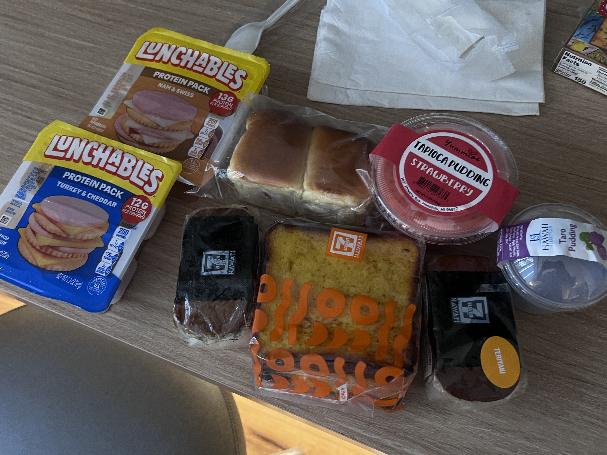
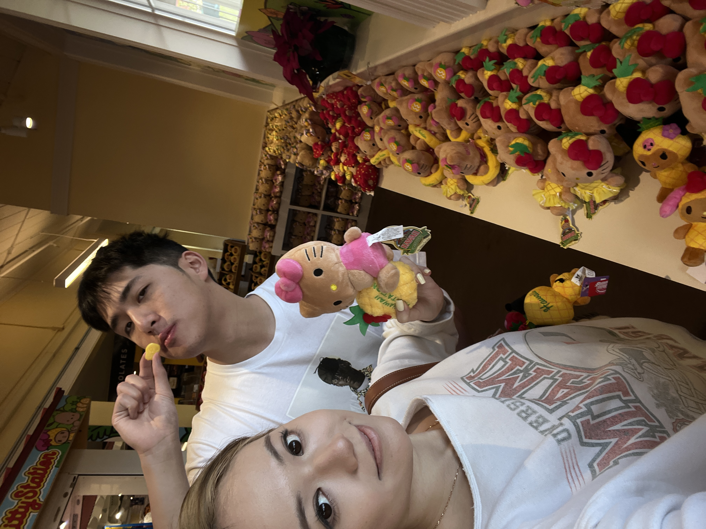
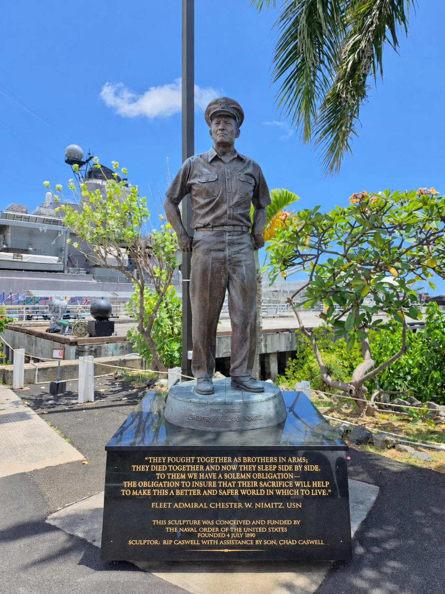
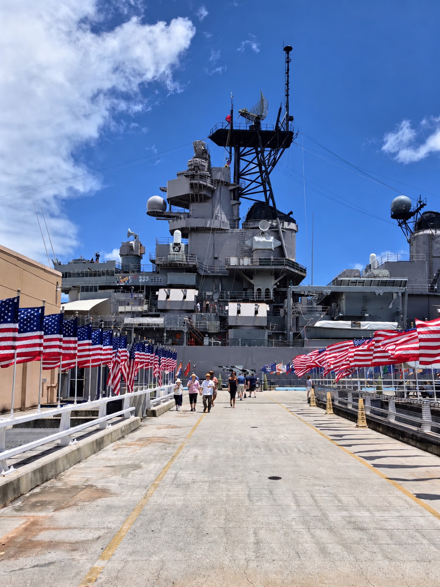

Day 1 - Arrival and Waikiki Beach
We landed on Oʻahu in the afternoon, and I took a couple of photos at the airport before our trip really began. After leaving the airport, we went to Ala Moana to pick up our rental car. We had missed lunch, so we grabbed some musubi and snacks. It felt good to finally sit down and eat after traveling.



Later, we drove to Waikīkī to enjoy the sun and take photos by the water. Seeing the ocean and Diamond Head made the first day feel real at last. That evening, we wandered through some shops near Waikīkī Beach before heading back to rest.

Day 2 - Breakfast and Pineapples
The next morning, we went to Island Vintage Coffee for breakfast. We ordered an ube bagel, a savory rice-and-egg dish, and a mango smoothie. The bagel itself had a wonderfully fragrant ube flavor. The ube sauce tasted a little sweet to me, so I liked letting the bagel's own flavor stand out. Sitting together over breakfast put me in such a happy mood for the day ahead.
After breakfast, we drove toward the middle of the island to Dole Plantation. We tried fresh pineapple and pineapple ice cream, and I filmed some locally grown pineapples. The fruit tasted especially fresh. We had fun taking photos, browsing the souvenir shop, and choosing a few things to bring home. It was a simple stop that left me smiling.


In the evening, we went to Ala Moana Center for teppanyaki. The flames rising from the grill were exciting to watch, and the food smelled amazing. It was a delicious end to an already happy day.

Day 3 - Musubi, Pearl Harbor, and Udon
We took the morning slowly and went to Musubi Cafe. We bought a whole tray of different musubi and had fun trying them together. After tasting so many kinds, I still thought the classic one was the best.

After our relaxed morning, we visited Pearl Harbor and the USS Missouri. I learned that the attack on Pearl Harbor on December 7, 1941, brought the United States into World War II. Japan’s formal surrender was signed aboard the USS Missouri in 1945. Seeing the ship and its enormous guns made that history feel much closer. Walking past the flags and Admiral Nimitz's statue made me pause and think about the people behind those dates. I left with a fresh perspective and a lot to think about, and I was glad we made time for this visit.



That evening, my girlfriend, our friend, and I went to Marugame Udon in Waikīkī. We ordered so many different bowls of udon that our table was nearly full. The tempura had just come out of the fryer when I reached it in line, so it was especially crisp, and the udon was wonderfully smooth and springy. After waiting about half an hour, we agreed the meal was worth it.

Day 4 - Kualoa Ranch and Secret Island
The drive from Waikīkī to Kualoa Ranch took around 40 minutes to an hour. There were activities like horseback riding and off-road tours, but I booked too late to get a spot on those tours. We chose the full-day Secret Island tour instead. A boat carried us across the water, with green mountains behind us, and I was excited to spend the day there.


| Time | Activity |
|---|---|
| 10:30 a.m. | Stand-up paddleboarding |
| 11:00 a.m. | Boat ride to look for turtles |
| 1:30 p.m. | Canoe to the sandbar |
| 2:30 p.m. | Pond tour |
Once we arrived, the day felt both active and relaxing. We tried stand-up paddleboarding, took a boat ride to look for turtles, paddled a canoe toward a sandbar, and joined a pond tour. Between activities, I kept looking out at the water and mountains. Even with a full schedule, it felt wonderful to slow down and enjoy being there together.
The full-day tour included lunch, but it was probably the least exciting part of the day. We had a cold chicken sandwich, some chips, and fruit. It was enough to keep us going, although I honestly didn’t enjoy it very much.


Even though lunch was disappointing, the scenery and activities made the day unforgettable. By the time we got back from Kualoa Ranch, we were exhausted. We picked up a simple dinner from the 7-Eleven across from our hotel, went back to our room, and called it a night.
Day 5 - Turtle Beach and a Rainbow
After four full days of exploring Oʻahu, our fifth day was also our last. We didn’t schedule any tours. We simply drove toward Turtle Beach on the North Shore, ready to slow down and enjoy the final day of our trip.
At Turtle Beach, we did very little, and that was exactly what we needed. We spent some quiet time there, letting everyday stress fade and enjoying the last moments of our trip. I’ve always believed that seeing a rainbow brings good luck, so the one we spotted on the drive felt especially meaningful. If you’re reading this, I hope a little of that luck finds its way to you, too.


Until Next Time, O'ahu
Five days on Oʻahu went by much too quickly. We ate so much good food, tried new things, and still found moments to slow down by the water. The trip was full, fun, and genuinely refreshing. I keep thinking about the fresh pineapple, the crispy tempura, the quiet beach, and that rainbow on our last day.
Little Moments I want to Remember
- Seeing Diamond Head from Waikiki Beach for the first time
- Tasting fresh pineapple at Dole Plantation
- Eating hot, crispy tempura after waiting in line for 30 minutes
- Spotting a rainbow on our drive to the North Shore on the morning of our last day
There is so much more of the island I want to see, so I’m already planning to come back this Christmas. For now, I’m taking home the photos, the memories, and the feeling that five days was only the beginning. If you have been there, I would love a place or food recommendation for my next trip. If you haven’t been, I would still love to hear what you thought of my travel diary!